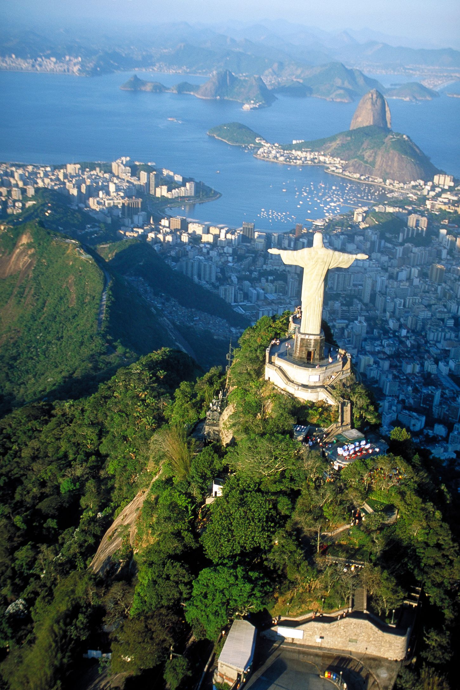

cristo redentor

El Cristo Redentor o Cristo del Corcovado es una estatua art déco que representa a Jesús de Nazaret, con los brazos abiertos, mostrando a la ciudad de Río de Janeiro, Brasil. La estatua tiene una altura de treinta metros sobre un pedestal de ocho metros.??